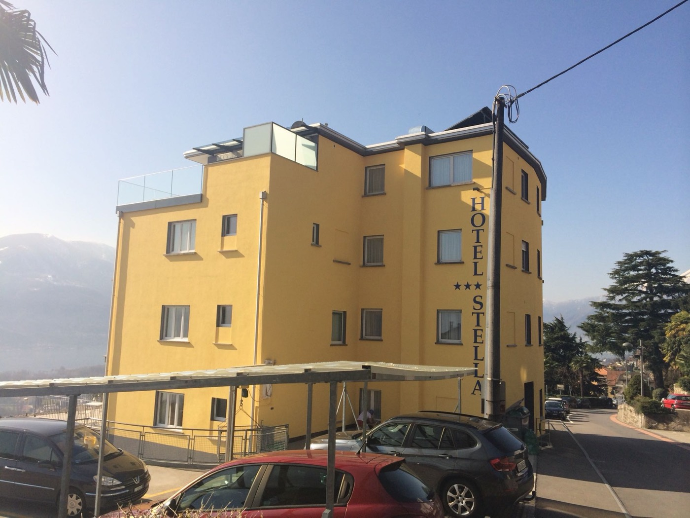
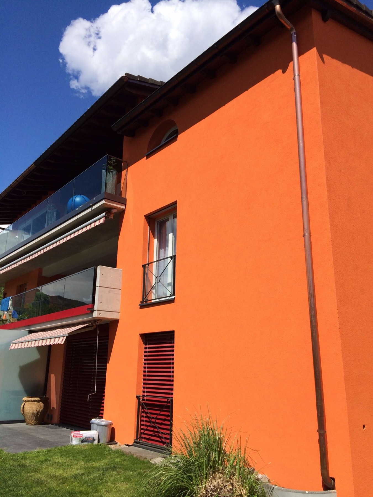
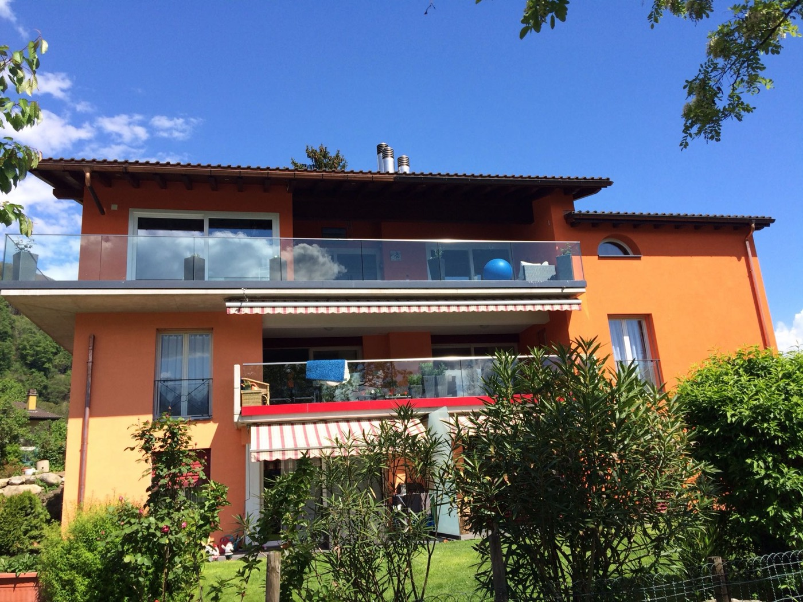
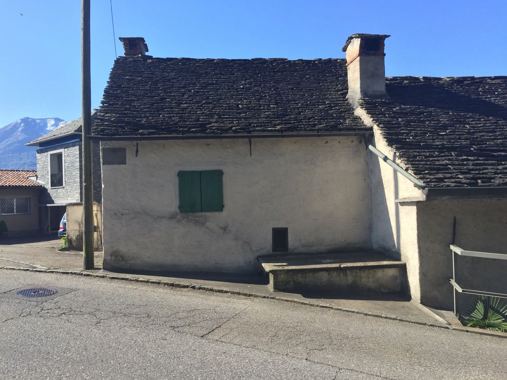
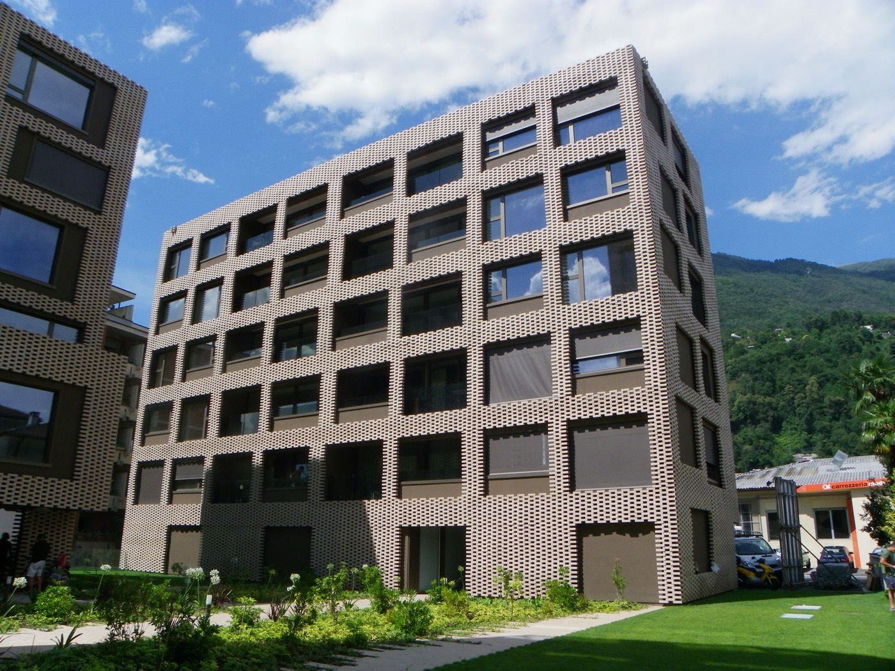
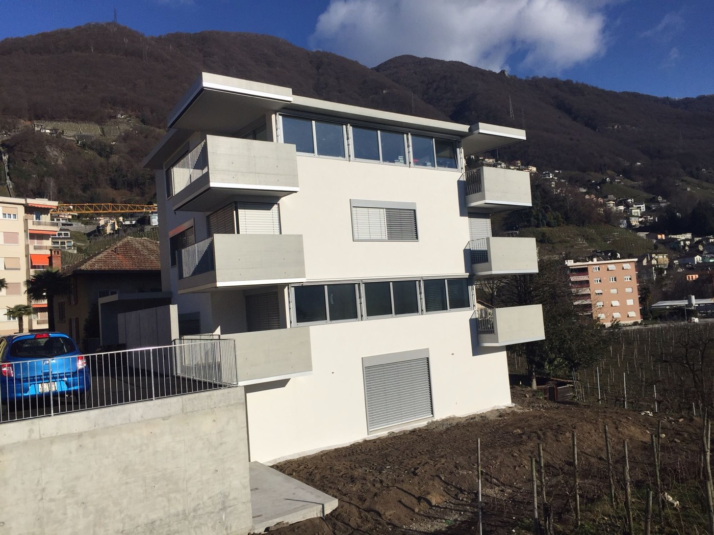
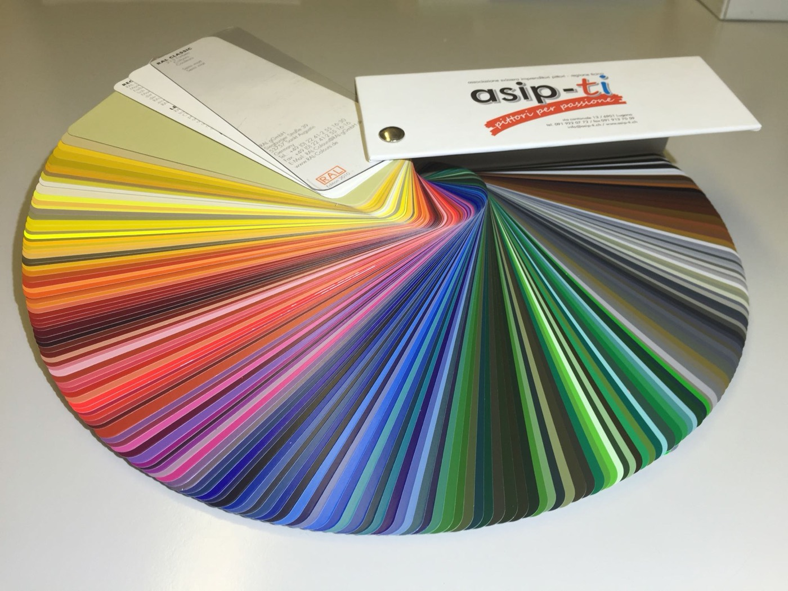

Albergo a Orselina
Facciata gialla, con il lago e le montagne alle spalle.
Locarno · dal 1895 · Maestri pittori dipl. fed.
Tinteggi e verniciature, decorativi, risanamento di facciate e di calcestruzzo armato, isolamenti termici. Dalla casa di famiglia allo stabile.

Il metodo, mano dopo mano
Servizi

Lavori

Facciata gialla, con il lago e le montagne alle spalle.

Una casa antica con il tetto in piode, ripresa in bianco calce.
Dal ponteggio all'arancio: una facciata rifatta da capo.

Un edificio contemporaneo di sei piani.

Volumi bianchi e grigi, linee nette.
Dal 1895
La ditta più vecchia della città vecchia. Nata come bottega di decorazione, oggi è un'impresa di pittura e risanamenti guidata dalla quarta generazione.
Diplomato all'Accademia di Belle Arti di Brera, a Milano. Decora chiese, palazzi storici e cappelle, e dipinge quadri, graffiti e affreschi.
Il figlio prende l'impresa. Il lavoro diventa quello di un'impresa di pittura completa, senza lasciare il ramo decorativo.
Maestro pittore. L'impresa cresce, con una regola che resta: la qualità prima di tutto.
In ditta dal 2006, maestro pittore dal 2007, alla guida dal 2011. Come il papà, è attivo nell'associazione di categoria e nella formazione professionale.

«Ne facciamo di tutti i colori.»
Non sapete che tinta scegliere per la facciata o per il soggiorno? La consulenza colori fa parte del lavoro: si guardano le mazzette sul posto, alla luce vera.
Fissa un sopralluogoContatto
Via Pedramonte 5
6600 Locarno, Ticino